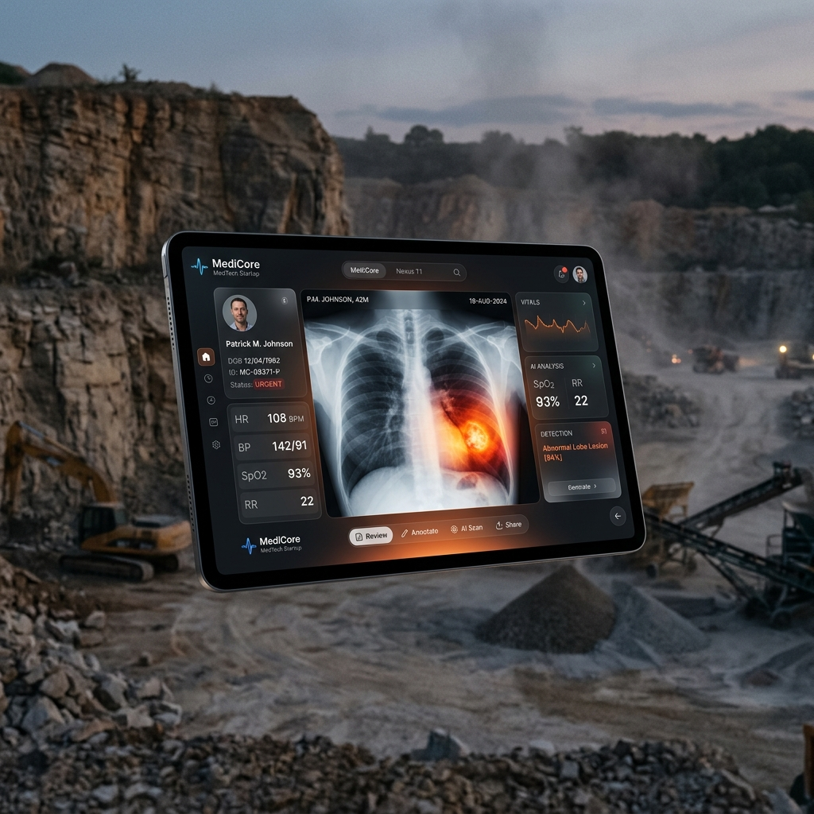

MaruCure is a zero-internet, offline-first medical device platform designed specifically for the harsh environments of Rajasthan's sandstone quarries. It fuses Dual-Model Chest X-Ray inference with real-time Bluetooth spirometry.
Built for the Rajasthan State Compensation Policy framework.
